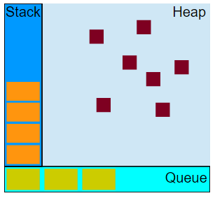

Event loop
1. 栈，堆，队列

例子：
function f(b){
var a = 12;
return a+b+35;
}
function g(x){
var m = 4;
return f(m*x);
}
g(21);
stack(栈)
- 调用 g 的时候，创建了第一个 堆栈帧 ，包含了 g 的参数和局部变量。
- 当 g 调用 f 的时候，第二个 堆栈帧 就被创建、并置于第一个 堆栈帧 之上，包含了 f 的参数和局部变量。
- 当 f 返回时，最上层的 堆栈帧 就出栈了（剩下 g 函数调用的 堆栈帧 ）。
- 当 g 返回的时候，栈就空了。
heap(堆)
对象被分配在一个堆中，一个用以表示一个内存中大的未被组织的区域。
queue(队列)
- 一个 JavaScript 运行时包含了一个待处理的消息队列。
- 每一个消息都与一个函数相关联。
- 当栈为空时，从队列中取出一个消息进行处理。这个处理过程包含了调用与这个消息相关联的函数-
callback（以及因而创建了一个初始堆栈帧）。 当栈再次为空的时候，也就意味着消息处理结束。
2. Event Loop(事件轮询)

- 所有同步任务都在主线程上执行，形成一个执行栈（execution context stack）。
- 主线程之外，还存在一个"任务队列"（task queue）。只要异步任务有了运行结果，就在"任务队列"之中放置一个事件。
- 一旦"执行栈"中的所有同步任务执行完毕，系统就会读取"任务队列"，看看里面有哪些事件。那些对应的异步任务，于是结束等待状态，进入执行栈，开始执行。
- 主线程不断重复上面的第三步。
Event Loop：事件循环
Micro Task：微任务
Macro Task：宏任务
主任务 ——> micro task ——> 渲染视图 ——> macro task 的操作
async function f() {
await p
console.log('ok')
}
// 相当于如下代码
function f() {
return RESOLVE(p).then(() => {
console.log('ok')
})
}